%load_ext autoreload
%autoreload 2
import os
import numpy as np
import rasterio as rio
import owslib.wcs as wcs
from pathlib import Path
from src.functions import *
import matplotlib.pyplot as plt
from shutil import rmtree
from rasterio.enums import ResamplingThis example shows how to process NDVI, get yearly cloud-free index mosaics and derive some stats from it. Functions needed for processing are defined in src.functions.
Getting example data from WCS
First step is to get the raw data, which is available and described here.
ndindex = 'ndvi'
outpath = 'example_data'
ix_path = Path(f'{outpath}/{ndindex}')
os.makedirs(ix_path, exist_ok=True)
datapath = ix_path/'raw'Georeferenced data can be downloaded from WCS, using owslib.wcs.
wcs_url = 'https://data.nsdc.fmi.fi/geoserver/wcs'
layer = f'PTA:s2m_{ndindex}'
years = [2016,2017,2018,2019,2020,2021,2022]
for y in years: os.makedirs(datapath/str(y), exist_ok=True)
w = wcs.WebCoverageService(wcs_url, version='1.0.0')
c = w[layer]
t = sorted(c.timepositions)
t = [ts for ts in t if '15' not in ts]The example area is between Kuivaniemi and Ranua, southern Lapland.
min_x = 457325
min_y = 7702545
size_x = 3000
size_y = 3000
bounds = (min_x, min_y, min_x+10*size_x, min_y+10*size_y)t contains all timepositions that cover a full month. Get the data and save it on the disk.
for ts in t:
outfn = f'{ts.split("T")[0][:-2].replace("-","")}.tif'
img = w.getCoverage(layer,
crs='EPSG:3067',
bbox=bounds,
WIDTH=size_x,
HEIGHT=size_y,
format='GeoTIFF',
time=[ts])
out = open(datapath/ts[:4]/outfn, 'wb')
out.write(img.read())
out.close()fig, axs = plt.subplots(2,3, figsize=(12,8), dpi=150)
for a in axs.flatten(): a.axis('off')
for a, year in zip(axs.flatten(), years[:-1]):
with rio.open(datapath/str(year)/f'{year}06.tif') as src:
im = src.read(masked=True)[0]
i = a.imshow(im, cmap='RdYlGn', vmin=1, vmax=200)
a.set_title(f'June {year}')
fig.colorbar(i, ax=axs.ravel().tolist())
plt.show()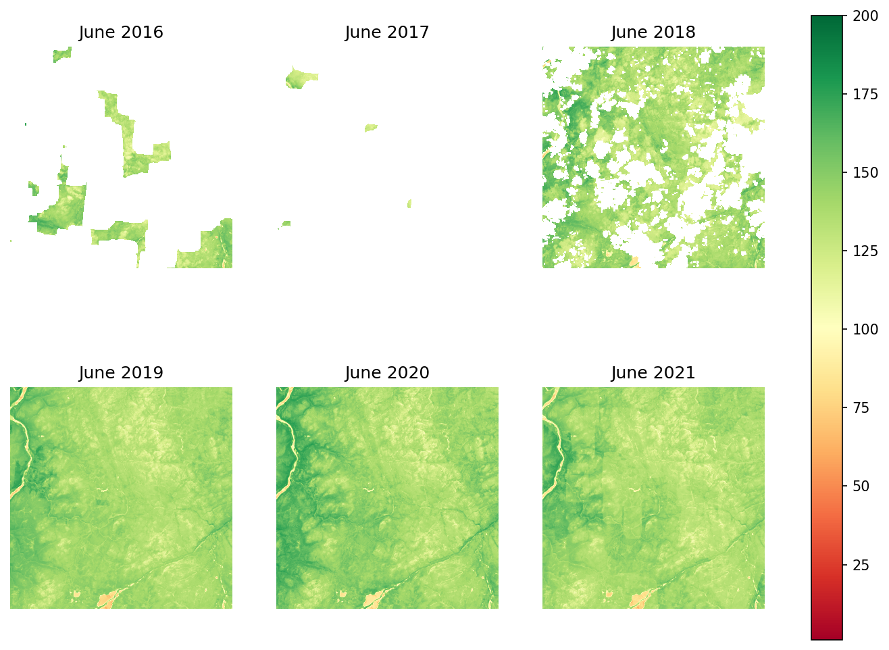
Creating gapless mosaics
Making base mosaics spring and autumn, and all non-growth seasons
Seasonal base mosaics are used to fill gaps for April, May and October, as they are usually the most cloudy months. Base mosaics are constructed from the median values of April, May and October during the full observation period.
First specify the timesteps for spring and autumn. Spring is April and May, autumn is mid-September to October.
spring_tsteps = sorted([t for t in c.timepositions if
any(mon in t for mon in ('04-30', '05-15', '05-31'))])
autumn_tsteps = sorted([t for t in c.timepositions if
any(mon in t for mon in ('10-15', '10-31'))])Download the files from WCS.
os.makedirs(ix_path/'basedata_spring', exist_ok=True)
for ts in spring_tsteps:
outfn = f'{ts.split("T")[0].replace("-","")}.tif'
img = w.getCoverage(layer,
crs='EPSG:3067',
bbox=bounds,
WIDTH=size_x,
HEIGHT=size_y,
format='GeoTIFF',
time=[ts])
out = open(ix_path/'basedata_spring'/outfn, 'wb')
out.write(img.read())
out.close()Read files as masked arrays, get median and save as base_spring.tif.
spring_files = os.listdir(ix_path/'basedata_spring')
spring_vals = []
for f in spring_files:
with rio.open(ix_path/'basedata_spring'/f) as src:
spring_vals.append(src.read(masked=True)[0])
prof = src.profile
spring_vals = np.ma.array(spring_vals)
spring_base = np.ma.median(spring_vals, axis=0)
with rio.open(ix_path/'base_spring.tif', 'w', **prof) as dest:
dest.write(spring_base,1)Remove the files not needed anymore.
rmtree(ix_path/'basedata_spring')Do the same for autumn.
os.makedirs(ix_path/'basedata_autumn', exist_ok=True)
for ts in autumn_tsteps:
outfn = f'{ts.split("T")[0][:-2].replace("-","")}.tif'
img = w.getCoverage(layer,
crs='EPSG:3067',
bbox=bounds,
WIDTH=size_x,
HEIGHT=size_y,
format='GeoTIFF',
time=[ts])
out = open(ix_path/'basedata_autumn'/outfn, 'wb')
out.write(img.read())
out.close()
autumn_files = os.listdir(ix_path/'basedata_autumn')
autumn_vals = []
for f in autumn_files:
with rio.open(ix_path/'basedata_autumn'/f) as src:
autumn_vals.append(src.read(masked=True)[0])
prof = src.profile
autumn_vals = np.ma.array(autumn_vals)
autumn_base = np.ma.median(autumn_vals, axis=0)
with rio.open(ix_path/'base_autumn.tif', 'w', **prof) as dest:
dest.write(autumn_base,1)
rmtree(ix_path/'basedata_autumn')Generate combined base mosaic, used to derive yearly amplitude.
vals = np.ma.array(np.ma.concatenate([spring_vals, autumn_vals]))
with rio.open(ix_path/'base_all.tif', 'w', **prof) as dest:
dest.write(np.ma.median(vals, axis=0), 1)fig, axs = plt.subplots(1,3, figsize=(12,4), dpi=150)
for a in axs: a.axis('off')
with rio.open(ix_path/'base_spring.tif') as src:
im = src.read(masked=True)[0]
axs[0].imshow(im, vmin=0, vmax=200)
axs[0].set_title('Spring base')
with rio.open(ix_path/'base_autumn.tif') as src:
im = src.read(masked=True)[0]
axs[1].imshow(im, vmin=0, vmax=200)
axs[1].set_title('Autumn base')
with rio.open(ix_path/'base_all.tif') as src:
im = src.read(masked=True)[0]
i = axs[2].imshow(im, vmin=0, vmax=200)
axs[2].set_title('Combined base')
fig.colorbar(i, ax=axs.ravel().tolist())
plt.show()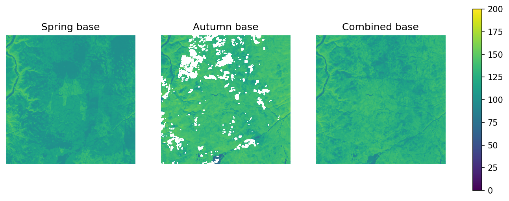
Now that all data needed for further processing is ready, let’s start creating cloudless mosaics.
Fill gaps with the maximum value of previous two years
As this step needs two previous years of data, the earliest year that can be processed from Sentinel-2 data is 2018. Also, because at the time of writing there is not enough data to process 2022, it is also omitted.
First step is to use fill_prev_years to fill gaps with the maximum value of previous two years.
fillyears = [2018,2019,2020,2021]
filled_path = ix_path/f'interp'
os.makedirs(filled_path, exist_ok=True)
fill_prev_years(datapath, filled_path, fillyears)As an example, see how May images look at this point.
fig, axs = plt.subplots(2,2, figsize=(10,8), dpi=150)
for a in axs.flatten(): a.axis('off')
for a, year in zip(axs.flatten(), fillyears):
with rio.open(filled_path/str(year)/f'{year}06.tif') as src:
im = src.read(masked=True)[0]
i = a.imshow(im, cmap='RdYlGn', vmin=1, vmax=200)
a.set_title(f'May {year}')
fig.colorbar(i, ax=axs.ravel().tolist())
plt.show()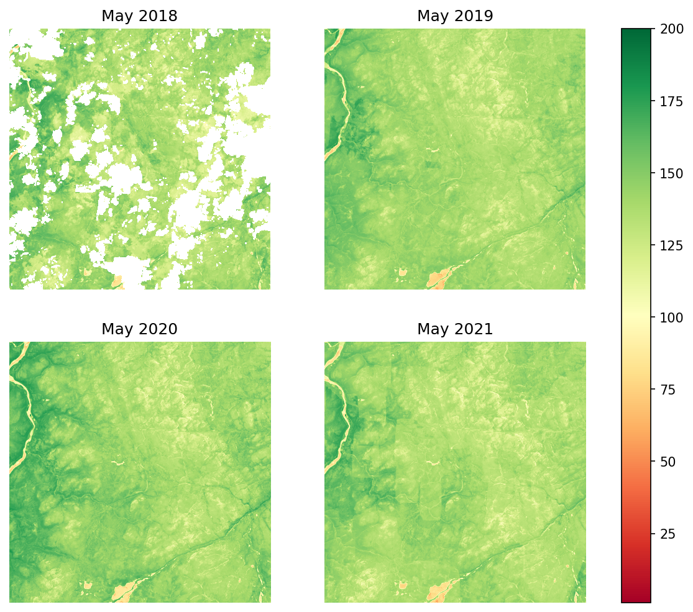
Run rasterio.fill.fillnodata
Run rasterio.fill.fillnodata for the mosaics, in order to interpolate possible missing values. This usually doesn’t fill that much aside from small holes. fill_nodata runs rasterio.fill.fillnodata to all images.
fill_nodata(filled_path)fig, axs = plt.subplots(2,2, figsize=(10,8), dpi=150)
for a in axs.flatten(): a.axis('off')
for a, year in zip(axs.flatten(), fillyears):
with rio.open(filled_path/str(year)/f'{year}05.tif') as src:
im = src.read(masked=True)[0]
i = a.imshow(im, cmap='RdYlGn', vmin=1, vmax=200)
a.set_title(f'May {year}')
fig.colorbar(i, ax=axs.ravel().tolist())
plt.show()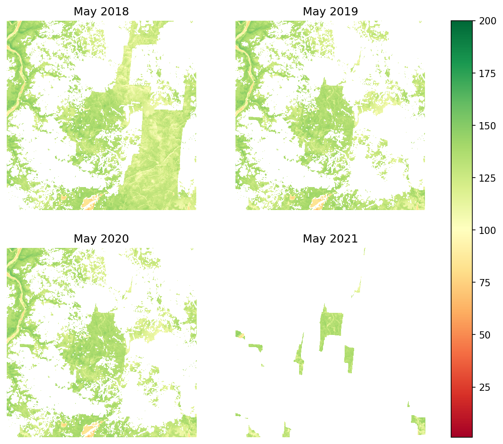
Fill April and May with spring mosaic
Use base mosaic to fill missing data with fill_base. Pictures below show the difference before and after filling.
fig, axs = plt.subplots(2,4, figsize=(10,4), dpi=150)
for a in axs.flatten(): a.axis('off')
for i, year in zip(range(4), fillyears):
with rio.open(filled_path/str(year)/f'{year}04.tif') as src:
im = src.read(masked=True)[0]
axim = axs[0,i].imshow(im, cmap='RdYlGn', vmin=1, vmax=200)
axs[0,i].set_title(f'April {year}')
fill_base(filled_path, ix_path/'base_spring.tif')
for i, year in zip(range(4), fillyears):
with rio.open(filled_path/str(year)/f'{year}04.tif') as src:
im = src.read(masked=True)[0]
axim = axs[1,i].imshow(im, cmap='RdYlGn', vmin=1, vmax=200)
axs[1,i].set_title('Base-filled')
fig.colorbar(axim, ax=axs.ravel().tolist())
plt.show()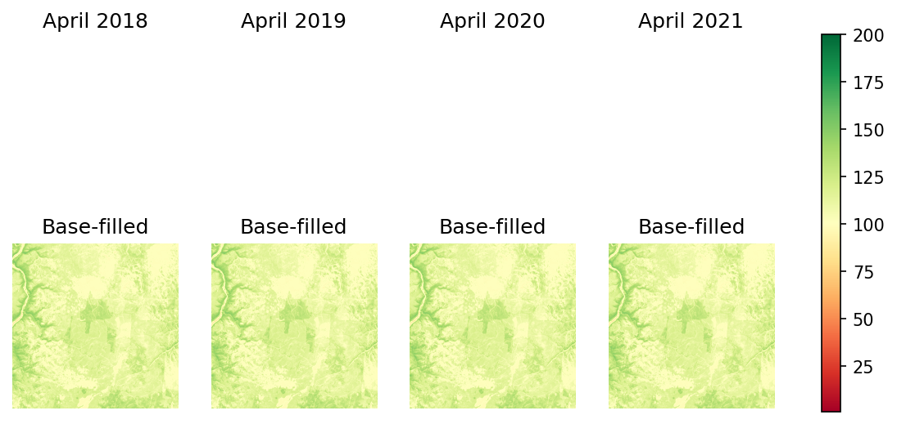
Fill October with autumn mosaic
Same thing as before, but for October.
fig, axs = plt.subplots(2,4, figsize=(10,4), dpi=150)
for a in axs.flatten(): a.axis('off')
for i, year in zip(range(4), fillyears):
with rio.open(filled_path/str(year)/f'{year}10.tif') as src:
im = src.read(masked=True)[0]
axim = axs[0,i].imshow(im, cmap='RdYlGn', vmin=1, vmax=200)
axs[0,i].set_title(f'October {year}')
fill_base(filled_path, ix_path/'base_autumn.tif')
for i, year in zip(range(4), fillyears):
with rio.open(filled_path/str(year)/f'{year}10.tif') as src:
im = src.read(masked=True)[0]
axim = axs[1,i].imshow(im, cmap='RdYlGn', vmin=1, vmax=200)
axs[1,i].set_title(f'Base-filled')
fig.colorbar(axim, ax=axs.ravel().tolist())
plt.show()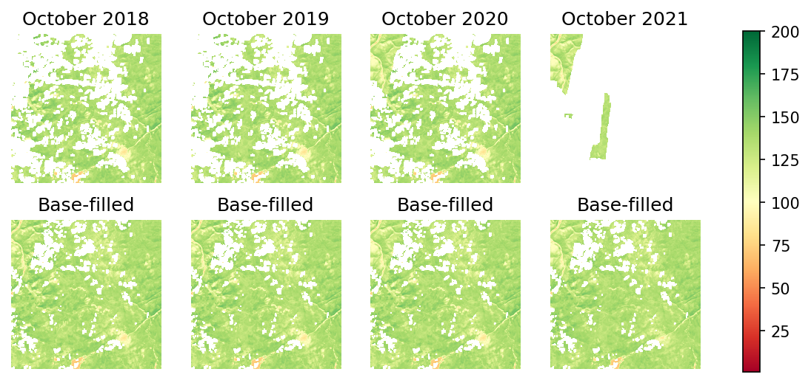
Fill August with mean value of July and September
There are some areas where August has gaps, and they are filled with fill_august.
fig, axs = plt.subplots(2,4, figsize=(10,4), dpi=150)
for a in axs.flatten(): a.axis('off')
for i, year in zip(range(4), fillyears):
with rio.open(filled_path/str(year)/f'{year}08.tif') as src:
im = src.read(masked=True)[0]
axim = axs[0,i].imshow(im, cmap='RdYlGn', vmin=1, vmax=200)
axs[0,i].set_title(f'August {year}')
fill_august(filled_path)
for i, year in zip(range(4), fillyears):
with rio.open(filled_path/str(year)/f'{year}08.tif') as src:
im = src.read(masked=True)[0]
axim = axs[1,i].imshow(im, cmap='RdYlGn', vmin=1, vmax=200)
axs[1,i].set_title(f'Adjacent-filled')
fig.colorbar(axim, ax=axs.ravel().tolist())
plt.show()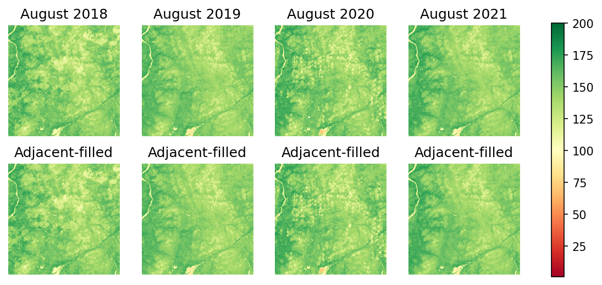
Collating statistics for years
After getting all the gapless data ready, running make_stats creates the yearly statistics for NDVI.
statspath = ix_path/'stats'
os.makedirs(statspath, exist_ok=True)
make_stats(filled_path, statspath, ix_path/'base_all.tif')Yearly maximum
fig, axs = plt.subplots(2,2, figsize=(10,8), dpi=150)
for a in axs.flatten(): a.axis('off')
for a, year in zip(axs.flatten(), fillyears):
with rio.open(statspath/str(year)/f'max.tif') as src:
im = src.read(masked=True)[0]
i = a.imshow(im, cmap='RdYlGn', vmin=1, vmax=200)
a.set_title(f'NDVI max {year}')
fig.colorbar(i, ax=axs.ravel().tolist())
plt.show()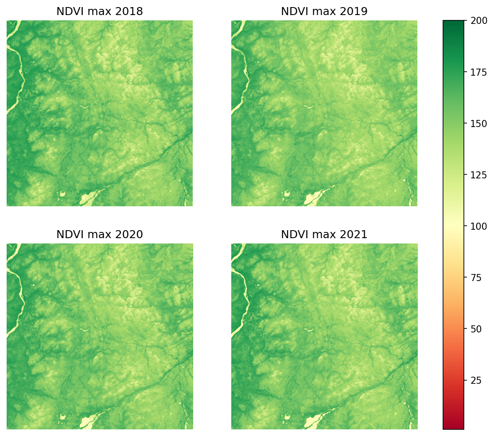
Yearly minimum
fig, axs = plt.subplots(2,2, figsize=(10,8), dpi=150)
for a in axs.flatten(): a.axis('off')
for a, year in zip(axs.flatten(), fillyears):
with rio.open(statspath/str(year)/f'min.tif') as src:
im = src.read(masked=True)[0]
i = a.imshow(im, cmap='RdYlGn', vmin=1, vmax=200)
a.set_title(f'NDVI min {year}')
fig.colorbar(i, ax=axs.ravel().tolist())
plt.show()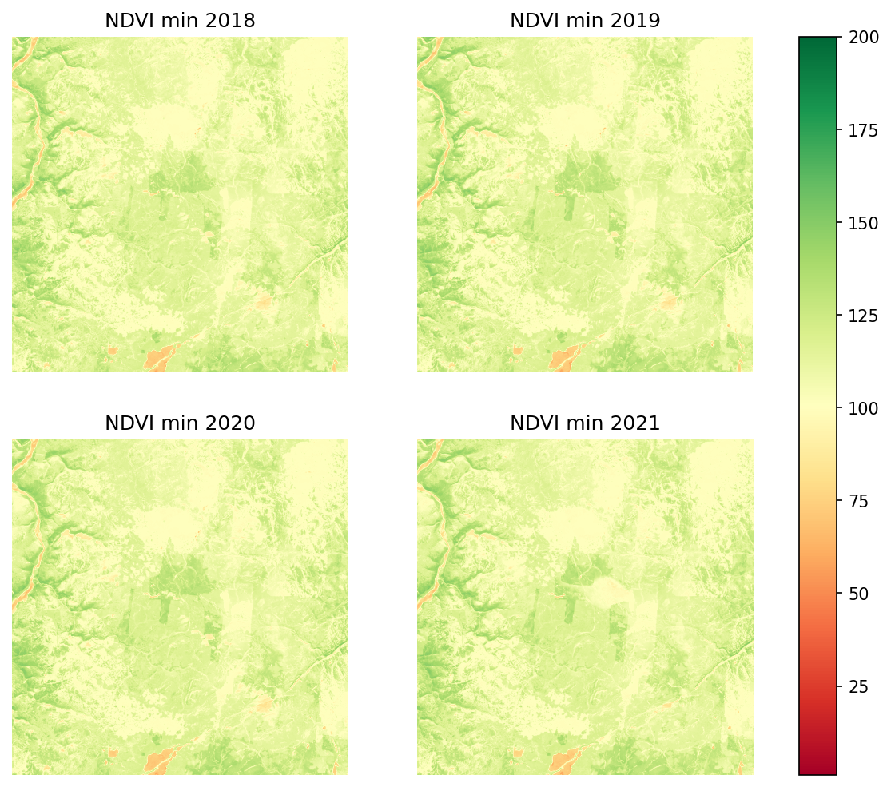
Yearly mean
fig, axs = plt.subplots(2,2, figsize=(10,8), dpi=150)
for a in axs.flatten(): a.axis('off')
for a, year in zip(axs.flatten(), fillyears):
with rio.open(statspath/str(year)/f'mean.tif') as src:
im = src.read(masked=True)[0]
i = a.imshow(im, cmap='RdYlGn', vmin=1, vmax=200)
a.set_title(f'NDVI mean {year}')
fig.colorbar(i, ax=axs.ravel().tolist())
plt.show()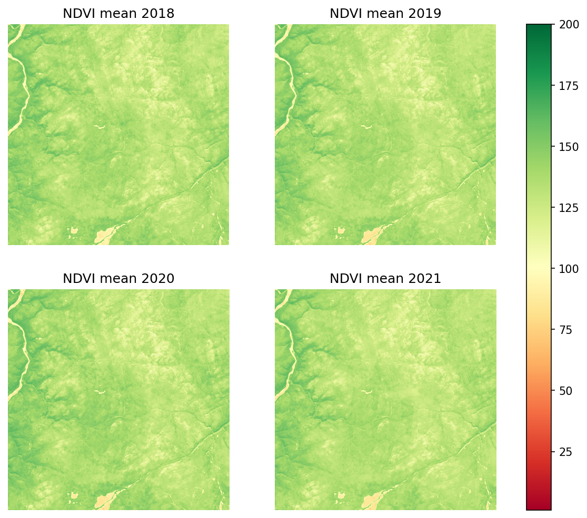
Yearly median
fig, axs = plt.subplots(2,2, figsize=(10,8), dpi=150)
for a in axs.flatten(): a.axis('off')
for a, year in zip(axs.flatten(), fillyears):
with rio.open(statspath/str(year)/f'median.tif') as src:
im = src.read(masked=True)[0]
i = a.imshow(im, cmap='RdYlGn', vmin=1, vmax=200)
a.set_title(f'NDVI median {year}')
fig.colorbar(i, ax=axs.ravel().tolist())
plt.show()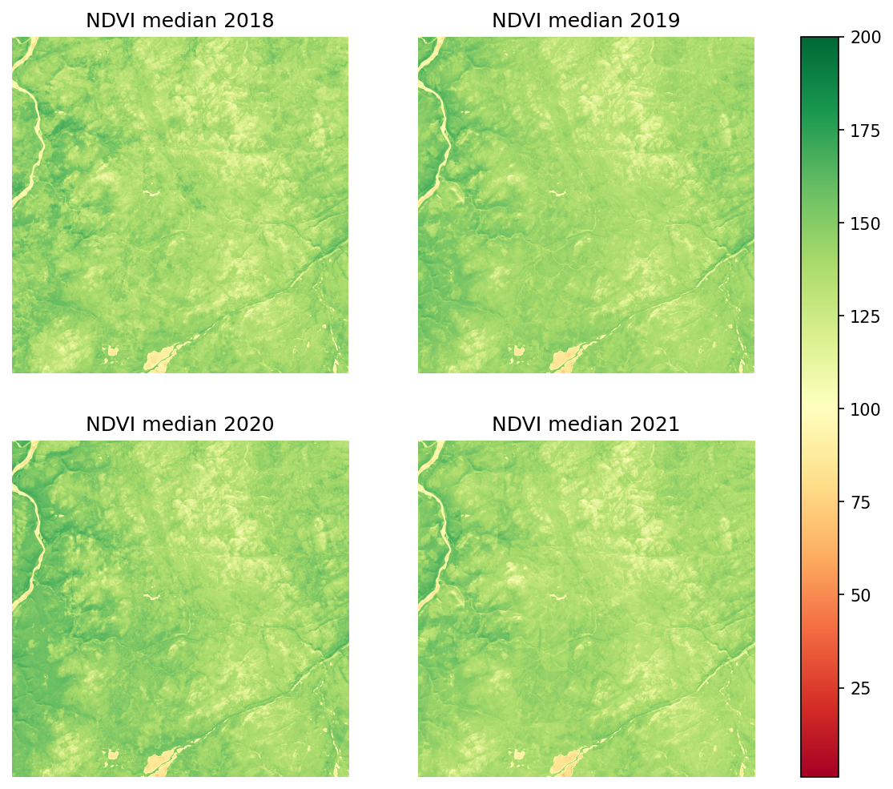
Yearly sum
Sum can be used as a proxy for productivity for the areas, especially for fields etc.
fig, axs = plt.subplots(2,2, figsize=(10,8), dpi=150)
for a in axs.flatten(): a.axis('off')
for a, year in zip(axs.flatten(), fillyears):
with rio.open(statspath/str(year)/f'sum.tif') as src:
im = src.read(masked=True)[0]
i = a.imshow(im, cmap='RdYlGn', vmin=1, vmax=1400)
a.set_title(f'NDVI sum {year}')
fig.colorbar(i, ax=axs.ravel().tolist())
plt.show()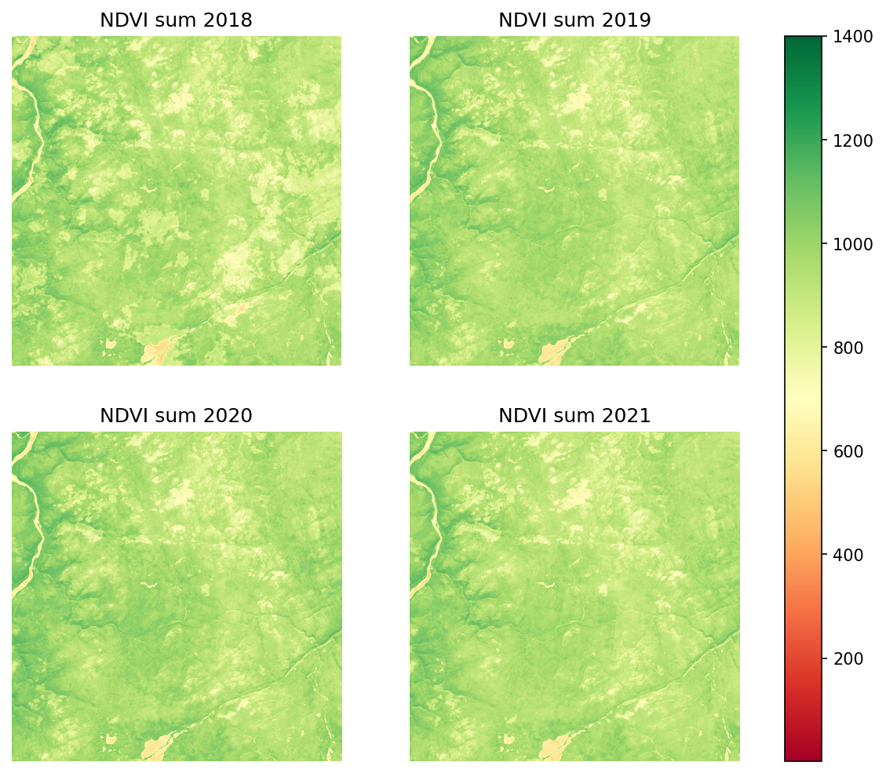
Yearly amplitude
Amplitude is calculated as \(amp = max - base\_all\), and used for phenology applications.
fig, axs = plt.subplots(2,2, figsize=(10,8), dpi=150)
for a in axs.flatten(): a.axis('off')
for a, year in zip(axs.flatten(), fillyears):
with rio.open(statspath/str(year)/f'amp.tif') as src:
im = src.read(masked=False)[0]
i = a.imshow(im, cmap='RdYlGn', vmin=-10, vmax=100)
a.set_title(f'NDVI amplitude {year}')
fig.colorbar(i, ax=axs.ravel().tolist())
plt.show()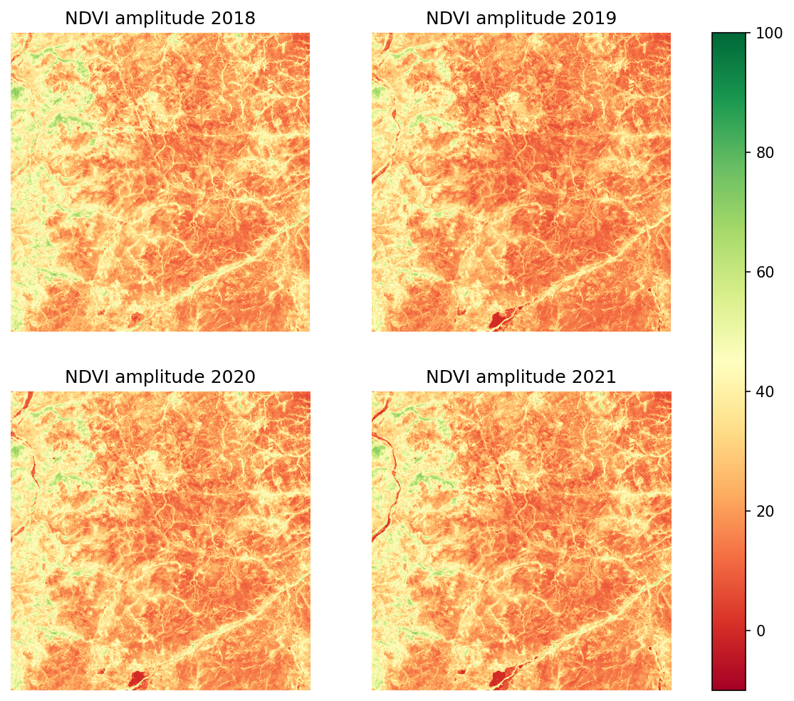
Comparison with previous amplitude formula \(max - median\).
fig, axs = plt.subplots(2,2, figsize=(10,8), dpi=150)
for a in axs.flatten(): a.axis('off')
for a, year in zip(axs.flatten(), fillyears):
with rio.open(statspath/str(year)/'max.tif') as src:
maxvals = src.read(masked=True)[0]
with rio.open(statspath/str(year)/'median.tif') as src:
medians = src.read(masked=True)[0]
amp = (maxvals - medians)
i = a.imshow(amp, cmap='RdYlGn', vmin=-10, vmax=100)
a.set_title(f'NDVI amplitude {year}')
fig.colorbar(i, ax=axs.ravel().tolist())
plt.show()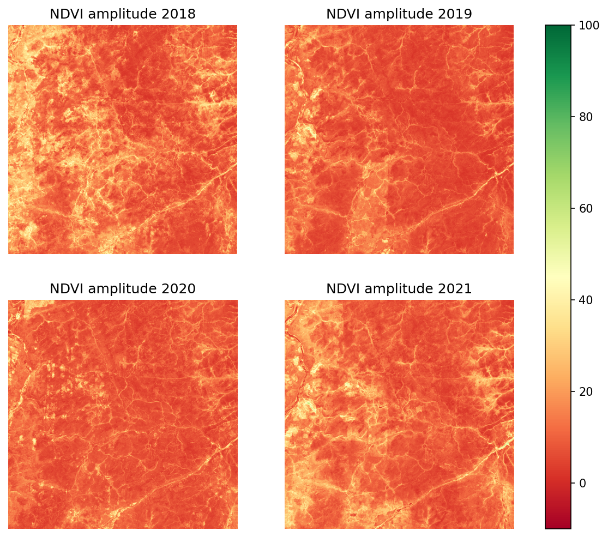
Post-processing
As a post-processing step, the mosaics are clipped with the borders of Finland, and overviews are built for faster rendering. This are doesn’t need to be clipped but let’s build overviews. src.functions.clip_rasters can be used to clip data with some polygon.
base_fns = [ix_path/'base_spring.tif', ix_path/'base_autumn.tif']
stats_fns = [statspath/year/f for year in os.listdir(statspath) for f in os.listdir(statspath/year)]
interp_fns = [filled_path/year/f for year in os.listdir(filled_path) for f in os.listdir(filled_path/year)]
factors = [2**(n+1) for n in range(4)] # Images are so small that this is enough
for f in base_fns + stats_fns + interp_fns:
dst = rio.open(f, 'r+')
dst.build_overviews(factors, Resampling.nearest)
dst.update_tags(ns='rio_overview', resampling='nearest')
dst.close()